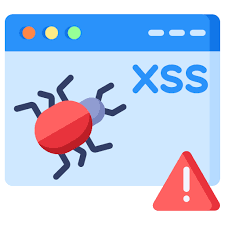

Phishing Attack
Phishing attacks trick users into revealing sensitive information like usernames and passwords by pretending to be trustworthy sources. Learn how attackers perform these attacks.
Try Phishing AttackSQL Injection
SQL Injection is a technique used by attackers to insert malicious SQL queries into input fields, potentially gaining unauthorized access to databases. See how this works in action.
Try SQL Injection

Cross-Site Scripting (XSS)
Cross-Site Scripting attacks inject malicious scripts into web pages to exploit vulnerabilities. Learn how attackers steal cookies or session data using this technique.
Try XSS AttackDenial of Service (DoS)
Denial of Service attacks overwhelm a server with excessive traffic, making it unavailable to legitimate users. Discover how attackers flood a system with requests.
Try DoS Attack